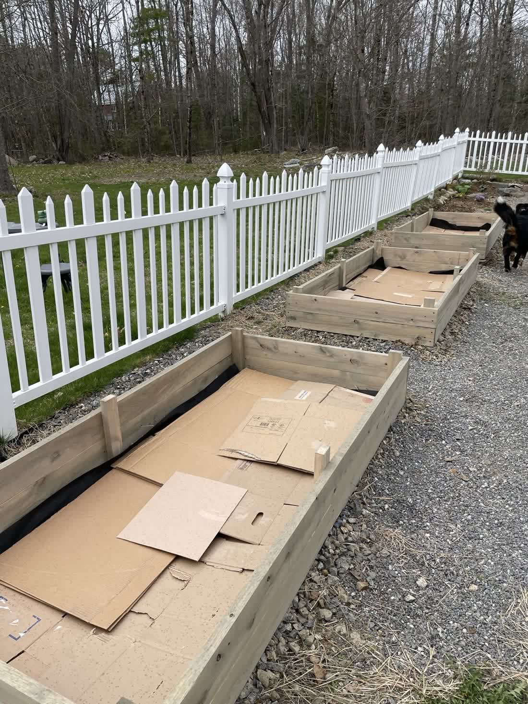
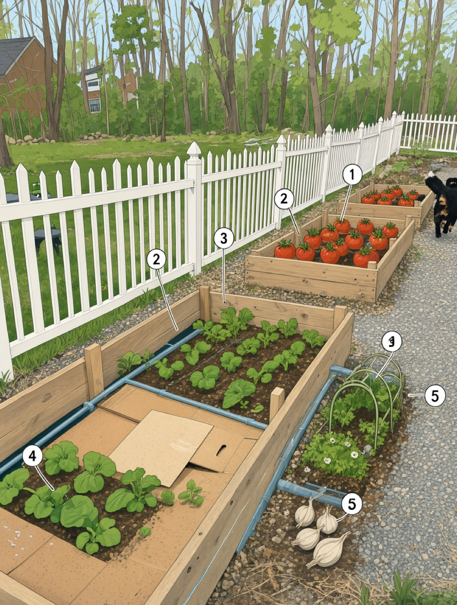
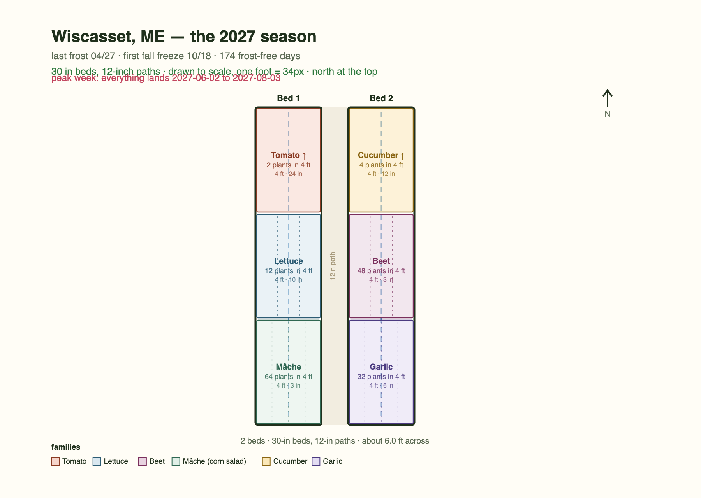

Plan your patch from a single photo.
Send a picture of your yard, your garden, or that sad strip behind the shed. Back comes a plan drawn to scale — what goes where, what to do first — and when it will all come in.
Plan my yard 🌱 First plan free, then five a week. No account. We don't keep your photo.
Before and after
A real yard in Maine, a real run of the tool, nothing mocked up. Here is the photo you send, the sketch that comes back with it, and the plan you actually take outside.



What you get
Because "plant in spring" is useless advice.
A garden in Wiscasset and one in Denver are three weeks apart and a different set of crops. So we look up the nearest NOAA weather station to your zip, take the real 50%-chance last spring frost and first fall freeze from thirty years of records, and build the plan inside that season — including telling you when a crop is a stretch where you live rather than quietly leaving it out.
Estimated at that station, not measured in your garden. A cold hollow two miles from a hilltop can differ by a week.
Forty pounds of tomatoes land in ten days.
That is the week that breaks people. The planting plan is the easy half — the hard half is August, when everything you planted in May arrives at once and the kitchen looks like a crime scene.
The Preservation Run is a canning, freezing and cellaring schedule built around your own harvest dates. A season's worth of "put it up" in one place, so the glut becomes jars instead of guilt. $29 when it's ready.